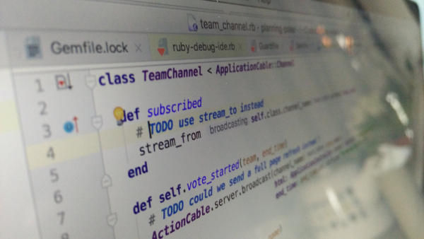
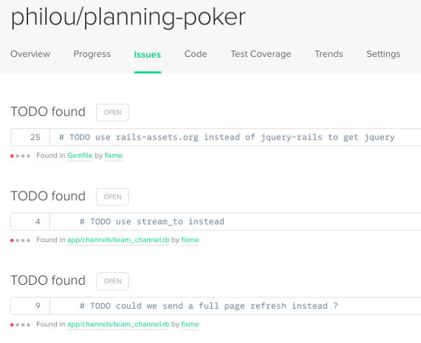
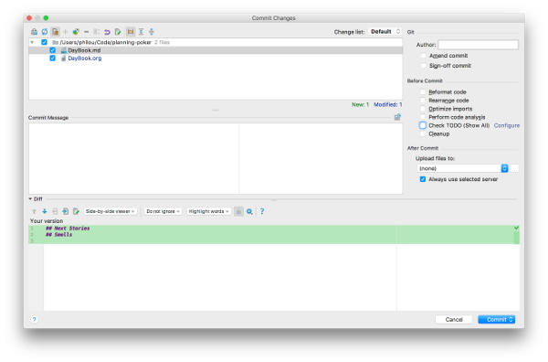

I eventually stumbled upon a way to keep track of technical debt in source code that is both straightforward and already built-in most tools : simple TODO comments !

How it happened ?
Some time ago, we tried to add @TechnicalDebt annotations in our source code. Unfortunately, after a few month, we came to the logical conclusion that it was too complex to be effective :
- It involved too much ceremony, which frightened people
- It made people uneasy to change anything around the annotation instead of sending a call to action
- As a result, it was always out of date
After a bit of discussion with my colleagues, we decided to replace all these annotations with simple TODO comments.
When the refactoring to do seems fairly obvious (but also premature) we’ll use a straightforward //TODO (example) introduce a factory message. Next time a pairs gets to work on this part of the code, they get the silent opinion of their peers to help them decide what to do about this piece of the code. Other times, the code might be smelly, yet without us knowing what to do about it yet, in this case, we agreed to use //TODO SMELL (example) responsibilities are not clear in this class which is still a TODO comment, but not a clear call to action.
When I started my current side project, I naturally started to use them. They display nicely in CodeClimate.
The pros

The great thing about TODO comments is that, as a very old programming trick, they are already supported out of the box by most tools IntelliJ, SonarQube, Rails, CodeClimate and I guess many others. Only one day after I refactored to TODO comments, a team mate fixed one that had appeared in his IDE’s TODO tab !
The cons
Some tools, IDEs in particular, tend to assume that you should fix all your TODOs before you commit anything. That’s not exactly how we are using them to track lasting technical debt. So that’s one thing you need to keep in mind.
Tools like Sonar on the other hand, assign a fixed remediation cost to any TODO you have in the code, which is usually not the case at all !
How to set it up in your project
As you might guess, this is pretty easy. Just start adding TODO comments in your code …
Teamwise
It is worth first validating the practice with your colleagues though. There are many ways to do that, depending on your team’s work habits :
- Use your team Slack (or whatever chat room you use) to share a link to this post (for example) and create a yes/no poll
- Or if you think you need it, create some wiki page explaining the practice and detailing its rationals in your context, add a yes/no poll, and finally share this page with your team
- Eventually, if you think that this topic deserves it, setup a meeting with everyone and discuss the point. It might be worth sharing information about the practice beforehand to make the meeting more efficient. You can end the vote with a thumb vote (up : yes, down : no, side : whatever)
Don’t wait for unanimity to start the practice, majority is enough ! Make sure that people who voted the other way will follow the team practice in the end though. Remember that whatever the answer, discussing team practices is good.
Once all the team agreed on using (or not) TODO comments, mention the practice in your team’s coding conventions or working agreements (which I strongly recommend to have written somewhere). If you don’t have any yet, create some !
Toolswise
Most tools will handle TODO out of the box.
- Rails comes with a
rake notestask to listTODOcomments. - CodeClimate and SonarQube both lists
TODOsas issues in their default config - Most IDEs have a ‘TODO’ tab which will display the
TODOcomments in the project - Otherwise, good old grep will very happily find
TODOcomments in your code
Some tools might require small tweaks to improve the experience :
- In IntelliJ, in the commit window, uncheck the ‘Check TODO’ checkbox to avoid getting a warning at every commit

- SonarQube uses the same fixed remediation cost for every TODO comment. It’s up to you to adapt this remediation cost to your context.
What’s next ?
TODO comments are a good starting point to track technical debt. Once you start using them, there are a few things you can do :
First, remember to fix some regularly. Very old TODO comments are technical debt of their own ! Using code quality dashboards like SonarQube or CodeClimate help to continuously improve your code.
If your tools allow it, you might consider setting up a simpler //SMELL ... instead of //TODO SMELL ... or whatever other special comment that might be useful in your context.
Finally, there is a lean continuous improvement practice which consists of logging problems as they occur. Doing this could help your team to decide which technical debt hotspots are the most important to fix. When appropriate, link the problems with the TODO comments. After a few weeks of this, walking through all the problems during a retrospective should shed light on what parts of the code are causing the most troubles.
Edit 2017-04-19
Thanks a lot for your comments ! People have suggested a ton of great improvements over my basic setup :
- plugins to other tools that also support
TODOcomments - activating automatic sync between issues in CodeClimate and your issue tracking system
- using custom comments markers
- adding an ‘X’ to your comment every time you are bothered by the technical debt, tools can configured to assign a higher severity to issues with a lot of ‘X’